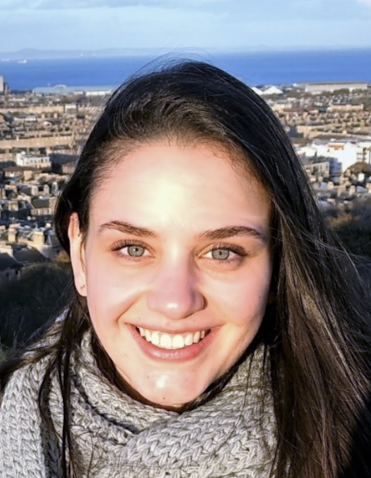

equipe
as pessoas por trás do activislab.
somos um grupo colaborativo que estuda como a percepção visual e a atividade neural se desenrolam durante o comportamento ativo.

membros atuais




mestrado
bruna a. bernardes

mestrado
joão borges

mestrado
felipe r. souza

mestrado
lucas p. donaire
ex-integrantes
iniciação científica
isabella pitorri
iniciação científica
melissa hongjin song zhu
colaboradores
pesquisa entre instituições.
sergio neuenschwander
instituto do cérebro, universidade federal do rio grande do norte · natal, brasil
patrick jendritza
centro alemão de primatas (dpz) · göttingen, alemanha
andré m. cravo
centro de matemática, computação e cognição, universidade federal do abc · são bernardo do campo, brasil
valentin wyart
école normale supérieure · paris, frança